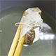
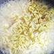
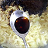
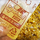
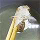
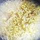
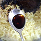
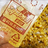

짜계치 1인분 30분 이내 누구나 재료Ingredients 짜장라면1개,물,맥주2컵,간장1/2티스푼,녹차티백1개,계란1개, 치즈1장 ,홍고추1/2개     계란을 반숙으로 후라이해서 준비한다 물2컴(400CC)넣고 녹차티백1개를 강한불에 우려내고 30초가지나면 건져낸다 물이끓으면 건더기스프와 라멶넣기 2분이지나면 면을 풀어주면서 중간불로 줄여준다 또 2분이지나면 스프와 올리브유넣고 섞어준다 그릇에 짜장라면넣고 준비해둔 계란반숙과 치즈한장을 올리면 완성
    계란을 반숙으로 후라이해서 준비한다 물2컴(400CC)넣고 녹차티백1개를 강한불에 우려내고 30초가지나면 건져낸다 물이끓으면 건더기스프와 라멶넣기 2분이지나면 면을 풀어주면서 중간불로 줄여준다 또 2분이지나면 스프와 올리브유넣고 섞어준다 그릇에 짜장라면넣고 준비해둔 계란반숙과 치즈한장을 올리면 완성